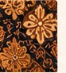
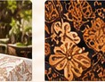

Budaya · 20 Oktober 2026
Sejarah Batik di Indonesia
Mengenal lebih dekat bagian penting dari budaya Nusantara.

Dapatkan informasi seputar batik, budaya, dan gaya hidup.
Mengenal lebih dekat bagian penting dari budaya Nusantara.

Cara sederhana menjaga kain batik tetap awet dan indah.
Perpaduan tradisi dan gaya modern dalam keseharian.